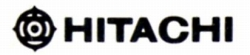
HITACHI（ヒタチ）/Lo-D （ ローディ）
日立製作所のオーディオブランド。ギャザードエッジスピーカー、パワーMOS FETアンプ、初のセパレート型CDプレーヤーなどが有名。1980年代後半から自主的な新規開発は停止し、ブランド自体も1990年代には実質的に消えている。
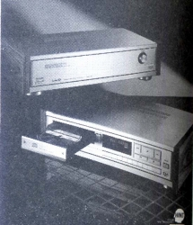
ヘッドフォンについては、1973年の時点ではまだ「Lo-D」ブランドではなく、「HITACHI」ブランドで販売されていた。「Lo-D」ブランドとなったのは1974〜75年頃からである。当初は1976年時点でサマリュウムコバルトマグネット採用の薄型デザインを採用するなど積極的な展開を見せていたが、通常コンポーネントに先立ち、1980年代初頭で自主的な製品（ギャザードエッジタイプのHD-S9など）は終わり、小型・軽量モデルのみとなった。
Lo-D
（ローディ）の製品を以下のように分類する。（この分類は個人的な意見で、メーカーの分類ではありません）
なおローディの1970年より以前の製品については資料が現時点では手元にほとんどない。
�T.「HITACHI」ブランド時代の製品
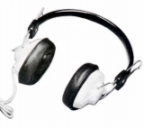
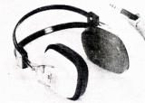
(左 HD-33 右 HD-66)
�U.「Lo-D」ブランド時代の製品
�@1975年頃の製品
従来のデザインを引き継ぐブランド移行当初のモデル。
HD-50 HD-60
(4ch機） HB-404
(コンデンサー型） HC-100
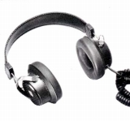
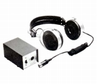
(左 HD-50 右 HC-100)
�A1976年頃の製品
サマリュウムコバルトマグネットを採用した、薄型の新規デザインのオープンエア型など。
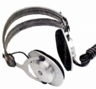
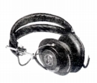
(左 HD-90 右 HD-150M)
�B1979年頃の製品
スピーカーで採用していたギャザードエッジ振動板を採用した独自路線のモデルなど。なぜか短命（生産期間1年ほど）に終わった。
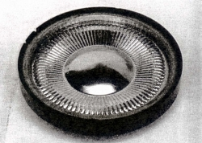
(HD-9のギャザードエッジ振動板）
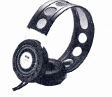
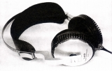
(左 HD-3 右 HD-9)
�C1980年頃の製品
ギャザードエッジ振動板採用の第２世代モデルと、小型軽量機機ブーム対応のモデル。ギャザードエッジ第２世代モデルは振動板の改良に加え、ダンピングコントロール機構や着脱式ケーブルを採用した。
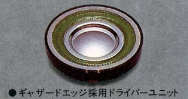
(HD-Ｓ9のギャザードエッジ振動板。ギャザードエッジ部分が一体成形から別素材へ改められた。）
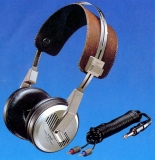
(HD-S9)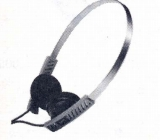
(HD-1)＊HD-1のスペックはブログ「黄昏の世界」様の記事をみて修正しました。ありがとうございます。
�Dブランド末期の小型・軽量タイプ
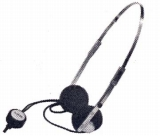
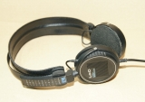
(HD-M10 画像は「neoTT」氏所有機）＊HD-M10については「neoTT」氏から全面的な情報の提供を受けました。ありがとうございます。
�E1980年代のゼネラルオーディオ？向けの製品
（日立ブランド）
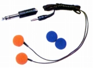
(HD-102)＊HD-7、HD-80、HD-90、HD-S7について豊永尚輝氏所有機の画像を使用しました。ありがとうございます。
�F（番外）1990年代のゼネラルオーディオ向け製品
1990年代に入り、完全に単品コンポーネントの世界から撤退しても、ミニコンポやラジカセなどゼネラル・オーディオの領域での活動は続いていた。したがってOEM調達のオプション品としてのヘッドフォンは存在した。しかしカタログからわかるのは名称と価格ぐらいである。
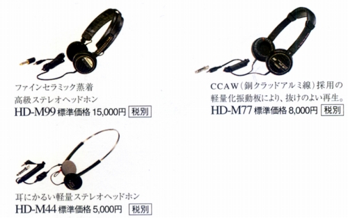
（1996年10月版カタログの掲載機種 HD-M99、77、44と型番はブランド末期のものと連続性があったようだ）
(注）先日、HD-M99がネットオークションに出品された。その際に判明したスペックは以下の通りである。
■型式 ダイナミック型オープンエアタイプ
■振動板 46�oファインセラミックスコートダイヤフラム
■インピーダンス 65Ω(1kHz)
■再生周波数帯域 15-20,000Hz
■許容入力 250mW
■感度
103dB/mW
■コード 2.5ｍ
■重量 110g(コード含まず）
■備考 ミニ→標準変換プラグ付属